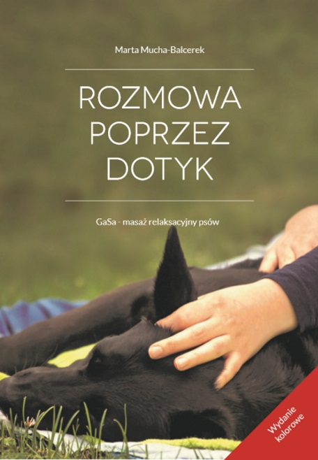
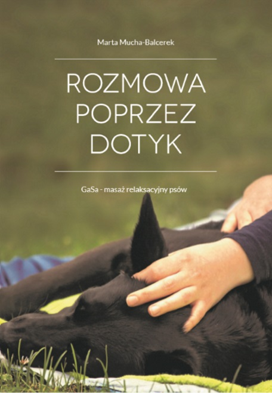
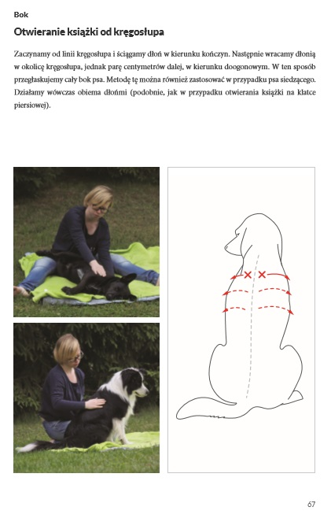
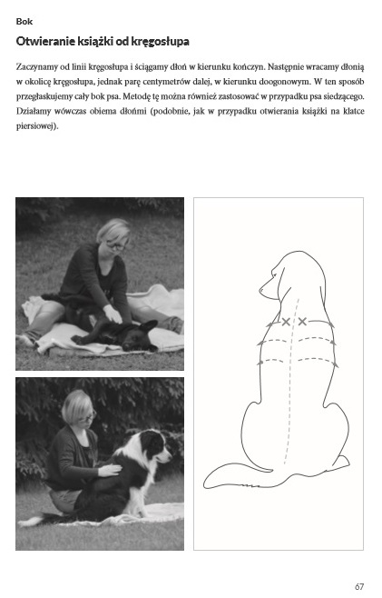
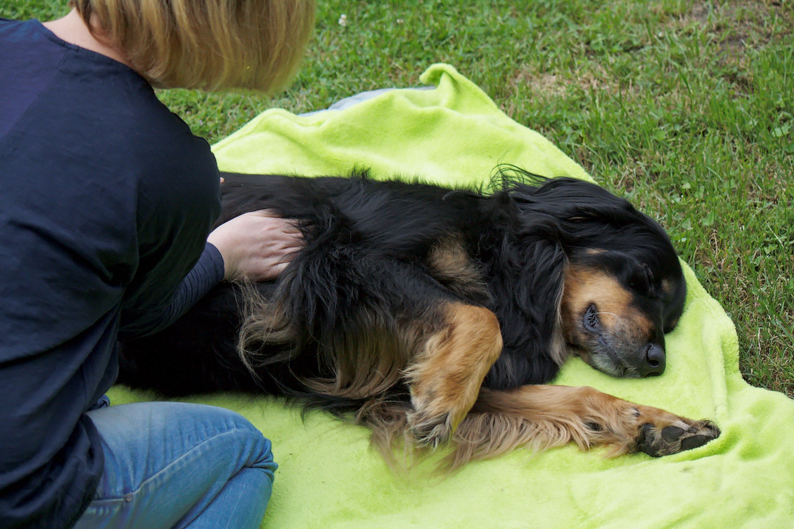

Masaż GaSa to rozmowa za pomocą dłoni z tymi, z którymi trudno porozumieć się słowami.
To odkrywanie, jaki rodzaj kontaktu odpowiada naszemu podopiecznemu. To nieustanna komunikacja, czas na praktykowanie uważności i otwartości na czworonoga. GaSa to również sposób na zadbanie o siebie i swój stan ducha, na bycie TU i TERAZ. Podczas naszego spotkania w dotyku uczymy się, aby niczego nie oczekiwać i do niczego się nie przywiązywać, gdyż za każdym razem jest inaczej.
Książka o masażu GaSa to nie podręcznik weterynaryjny ani zoofizjoterapeutyczny – to wizja masażu relaksacyjnego psów. „Rozmowa poprzez dotyk. GaSa – masaż relaksacyjny psów” to sposób na powtórzenie wiadomości dla tych, którzy uczestniczyli w warsztatach poświęconych tej tematyce oraz stworzenie możliwości dowiedzenia się więcej o tej wizji masażu dla tych, którzy nie mieli jeszcze takiej możliwości.

okładka - wydanie kolorowe

okładka - wydanie czarno-białe

wydanie kolorowe

wydanie czarno-białe

OPCJE ZAKUPU:
1
WYDANIE KOLOROWE
Książki drukowane na życzenie są dostępne w oprawie miękkiej klejonej z kolorowymi ilustracjami.
Zamówienia należy składać poprzez stronę internetową wyczerpane.pl . Czas realizacji zamówienia wynosi maksymalnie 7 dni roboczych + czas dostawy*.
Autorka masażu relaksacyjnego psów GaSa, zoofizjoterapeutka - ukończyła m.in. kurs fizjoterapii psów w 1. Deutsche Ausbildungsstätte für Hundephysiotherapie (w pierwszym niemieckim ośrodku szkoleniowym kształcącym rehabilitantów psów) oraz kurs Instruktora Masażu Shantala, absolwentka kierunku Zootechnika na Uniwersytecie Przyrodniczym w Poznaniu.
Od 2012 roku prowadzi warsztaty, wykłady i pokazy o masażu GaSa (masaż relaksacyjny psów).
Prywatnie opiekunka dwóch suczek (Samosi i Gandzi) i kocura (Dekla).
CHCESZ EGZEMPLARZ Z AUTOGRAFEM AUTORKI?
Napisz na adres: gasa.martamucha@gmail.com
Książki drukowane na życzenie są dostępne w oprawie miękkiej klejonej z kolorowymi ilustracjami.
Czas realizacji zamówienia wynosi maksymalnie 7 dni roboczych + czas dostawy* do autorki + czas dostawy do Ciebie: ok. 10-14 dni roboczych
– przyjaciółka psów, która popełnia błędy, dzięki którym proces poznawania trwa, członek Rady Fundacji Pomocy Zwierzętom Zagrożonym Wykluczeniem „Duch Leona” (www.duchleona.pl), opiekunka Alby
"Książka Marty jest dla mnie o tym, co w życiu najważniejsze: o uważności, o miłości i o szacunku. O tym, co istnieje poza słowami i co nadaje sens wszystkiemu."
Joanna Nawrocka-Rohnka
– fizjoterapeuta, Członek Zarządu Fundacji na rzecz wspomagania rehabilitacji i szerzenia wiedzy kynologicznej „Mały Piesek Zuzi” (www.malypiesekzuzi.pl), przewodniczka labradora Santka i buldożka francuskiego Karramby
"W sposób szczególny polecam tę publikację osobom, które na co dzień pracują z psami, ale także właścicielom domowych pupili. W natłoku codziennych obowiązków często zapomina się o tak prozaicznej rzeczy jak relaks oraz budowanie pozytywnych relacji z czworonogiem. Jak pisze autorka „każdy pies jest inny”, dlatego warto oddać się lekturze i spróbować poznać swojego przyjaciela, nie tylko w obszarze „jakie umie sztuczki”, ale „jaki w ogóle jest” i porozmawiać z nim bez używania „dużych liter”."
Katarzyna Gryglewska
– lekarz weterynarii, inż. zootechniki, behawiorysta COAPE (www.weterynarz-behawiorysta.pl), członek Stowarzyszenia Behawiorystów i Trenerów COAPE oraz Polskiego Towarzystwa Etologicznego, opiekunka borderki Chéri
"Wspaniała książka przeznaczona dla każdego opiekuna psa, a także specjalistów pracujących z psami jak lekarze weterynarii, behawioryści, zoopsycholodzy. Pokazuje, że masaż poprzez angażowanie zmysłów, emocji, uczuć może być niewerbalną formą komunikacji z psami, sposobem na zbudowanie trwałej więzi człowieka z psem. Wykonując masaż GaSa odbywasz niezwykłą podróż do swojego wnętrza i wnętrza twojego psa."